✌️ Peace, Love & Fashion
From tailored elegance to mod miniskirts and hippie freedom.
The Decade at a Glance
The 1960s were a dynamic, transformative period for fashion, reflecting the social and cultural changes of the decade. Early on, fashion still carried the elegance of the 1950s, with modest, tailored styles like A-line dresses and skirts. As the decade progressed, youth culture and countercultural movements brought bold changes. The mod look, with short skirts, geometric patterns, and vibrant colors, took off, especially in the UK. In the U.S., the hippie movement brought bohemian styles: bell-bottoms, tie-dye, and flowing dresses. Designers like Yves Saint Laurent and Mary Quant pushed boundaries, and icons such as Audrey Hepburn, Twiggy, and Jackie Kennedy became fashion symbols. Overall, the '60s were marked by experimentation, self-expression, and a break from traditional norms.
Top Three Fashion Influencers
- Jacqueline Kennedy: as First Lady, she popularized a chic, tailored look and set trends with her elegant style, especially her pillbox hats.
- Mary Quant: the British designer who championed and popularized the miniskirt and other youthful styles.
- Twiggy: the supermodel whose "mod" look influenced fashion around the globe.
Early 1960s
The Jackie Kennedy look
First Lady Jacqueline Kennedy heavily influenced fashion: tailored skirts, stiletto heels, and suits with short boxy jackets were everywhere.
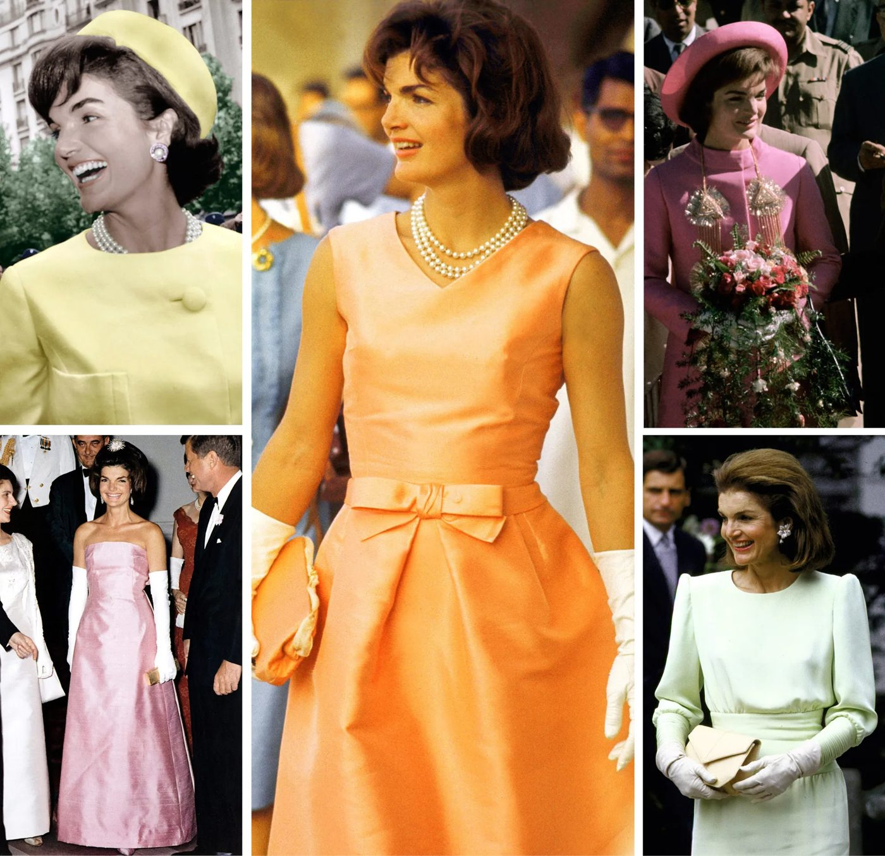
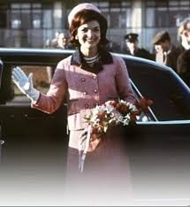
Shift dresses
Shift dresses became the new style: simple, geometric, and easy on the eye.
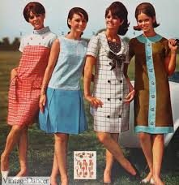
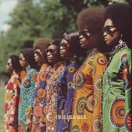
Evening wear
Full-skirted evening dresses with low or boat necklines and close-fitting waists were worn for special occasions.
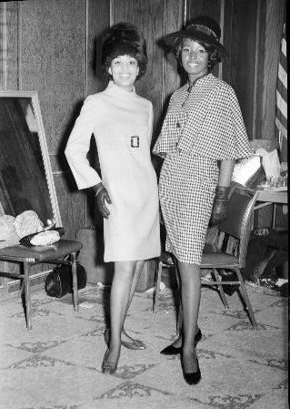
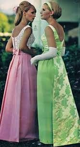
Mid-1960s
Mod fashion
Mod style meant bold patterns, bright colors, and statement accessories: big sunglasses, go-go boots, miniskirts, and colorful tights. African American fashion blended mod styles, Afrocentrism, and Civil Rights era influences, with miniskirts, bold colors, graphic prints, dashikis, caftans, Kente cloth, and the Afro.

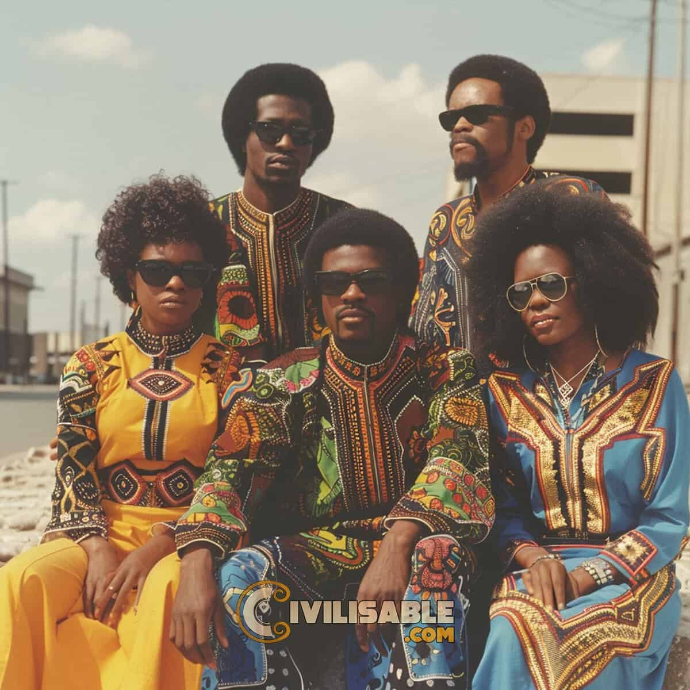
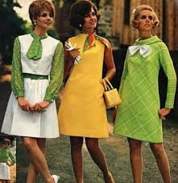
The miniskirt
The miniskirt was a defining fashion moment, often paired with tight sleeveless tops and tall, brightly colored go-go boots.
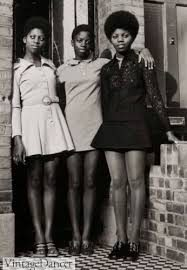
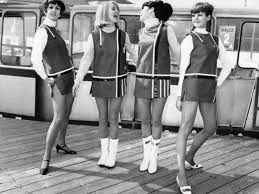
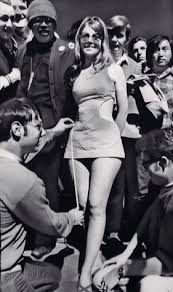
Accessories
Chunky jewelry, retro handbags, scarves, and hair accessories added flair to mod outfits.
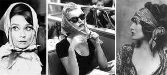
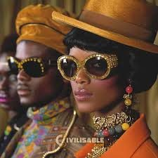
Late 1960s
Casual and free-spirited
Fashion became steadily more casual with the rise of hippie style: psychedelic prints, bright swirling colors, and tie-dye shirts, plus peasant blouses and bikinis.
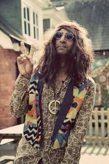
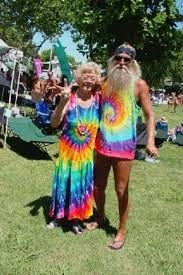
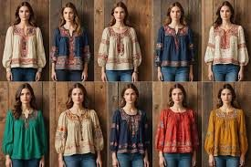
1960s Fashion Catalog
What iconic pieces cost then, and roughly what that is in today's money.
| Item | Image | Category | 1960s price | Today | Description |
|---|---|---|---|---|---|
| Mod Mini Dress | 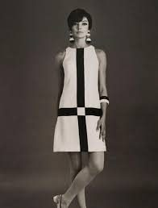 | Clothing | $12.95 | ≈ $110 | Bright colors and bold patterns, a true mod statement piece. |
| Go-Go Boots | 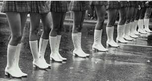 | Shoes | $9.99 | ≈ $85 | White vinyl knee-high boots, perfect for dancing the night away. |
| Bell-Bottom Pants | 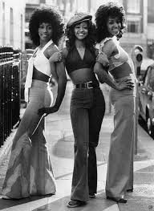 | Bottoms | $6.50 | ≈ $55 | Flared and funky, essential for a groovy look. |
| Shift Dress | 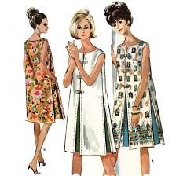 | Clothing | $10.75 | ≈ $90 | Straight-cut and chic, favored by icons like Twiggy. |
| Cat-Eye Sunglasses | 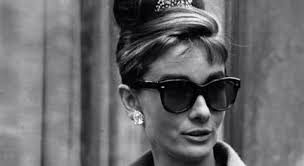 | Accessories | $2.49 | ≈ $20 | Stylish frames with a dramatic flair, pure vintage glam. |
Watch: 1960s Fashion in 15 Minutes
Want to go deeper? See the Fashion History Timeline for 1960–1969 from the Fashion Institute of Technology.